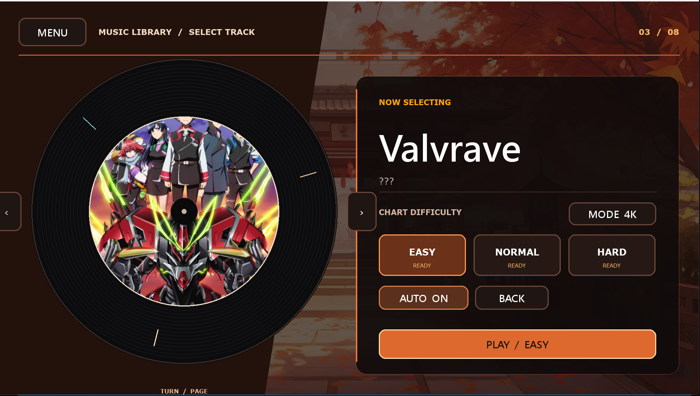
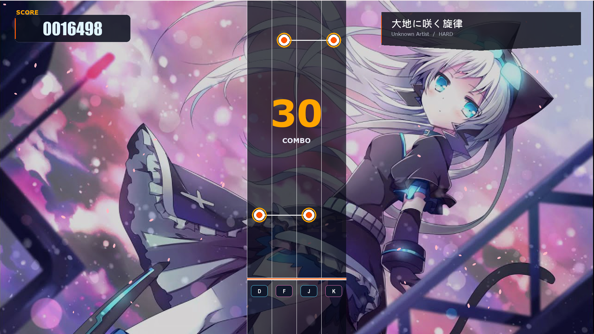

選曲畫面/遊戲美術皆能自由控制
難易度切換（Easy, Normal, Hard）與 Auto 模式開關。

對應鍵盤判定、動態 Combo 計數與即時分數累積，增加遊戲豐富度。

影片展示遊戲畫面與音符判定。按下播放即可觀看，也可以使用播放器控制列調整音量或切換全螢幕。
我們將 LumiBeat 的核心架構拆解為三大模組：遊戲架構解析、音訊同步與判定邏輯、以及自訂譜面編輯器製作。
一款優秀的音遊需要清晰的狀態機（State Machine）。我們透過迴圈切換主選單（Menu）、曲目選擇（Track Select）、遊戲進行（Gameplay）與結算畫面（Result）。
節奏遊戲的靈魂在於「音畫同步」。利用音樂播放的時間戳（Milliseconds / Tick）對照下落音符的座標，並透過 D、F、J、K 鍵進行碰撞判定。
讓玩家能夠自己製作喜歡的歌曲譜面！透過 JSON 格式儲存音符時間、軌道編號與持續長度，實現無限擴充的音樂內容。
import pygame
import sys
# 初始化 Pygame 與 4K 節奏遊戲核心參數
pygame.init()
SCREEN_WIDTH, SCREEN_HEIGHT = 1280, 720
screen = pygame.display.set_mode((SCREEN_WIDTH, SCREEN_HEIGHT))
pygame.display.set_caption("LumiBeat - Dev Engine")
class Note:
def __init__(self, lane, target_time):
self.lane = lane # 0, 1, 2, 3 對應 D, F, J, K
self.target_time = target_time # 毫秒時間戳
self.y = -50 # 初始畫面 Y 座標
self.hit = False
def update(self, speed):
self.y += speed # 根據下落速度更新座標
def main_game_loop():
clock = pygame.time.Clock()
running = True
notes = [Note(0, 1000), Note(2, 1500)] # 範例譜面資料
while running:
for event in pygame.event.get():
if event.type == pygame.QUIT:
running = False
elif event.type == pygame.KEYDOWN:
# 4K 按鍵判定 (D, F, J, K)
if event.key == pygame.K_d:
check_hit(0, notes)
elif event.key == pygame.K_f:
check_hit(1, notes)
screen.fill((18, 18, 20))
# 繪製 4 條音符落下軌道與 Combo 分數
pygame.display.flip()
clock.tick(60)
if __name__ == "__main__":
main_game_loop()Try it yourself
編輯音符軌道、拍點、下落速度或主色，再按「套用」更新右側預覽。這個練習使用受限的 JSON 設定，不會執行任意程式碼。
lane 可用 D、F、J、K；beat 決定音符排列位置，speed 可設 0.6–3.2。
Live preview
試著把音符移到不同軌道，或調整 speed 與 accent，觀察視覺回饋。